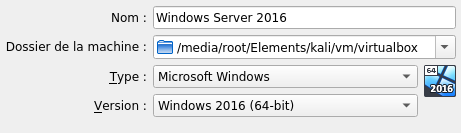
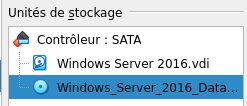

Windows Server 2016 :
Windows_Server_2016_Datacenter_EVAL_en-us_14393_refresh.ISO
VIRTUALBOX
Nouvelle :
- External HDD
- - RAM : 2048 mo
- - VDI : 50 go
Configuration : - - Stockage > Choisir lecteur optique
- 
- - Système > Carte mère > ordre d'amorçage
- - Supprimer Disquette

- - Réseau > Mode d'accès réseau
- - Accès par pont

Démarrer :
- Windows install
- Standard evaluation (Desktop experience)
- Custom : Install Windows only (advanced)
- Partition : New > Apply
Restart :
- Customize settings
- User name : Administrator
- Password : Ind1-gorillaz